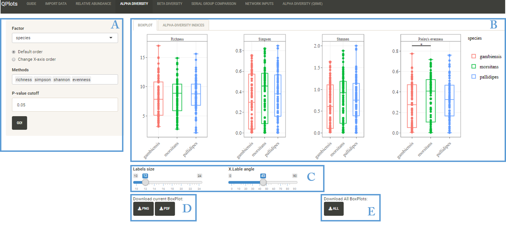

This section is based on MicrobioSeq package
This section aims to estimate and plot Alpha diversity (diversity among samples) based on selected indices. Diversity measures between groups are calculated using Pair-wise ANOVA.
- Richness: Refer to a total number of different species/OTUs in a sample
- Simpson: Measures the probability that two individuals randomly selected from a sample will belong to the same species/OTUs (Ranges between 0 and 1. 1: represents infinite diversity and 0: represents no diversity)
- Shannon: Measures how evenly the microbes are distributed in a sample
- Evenness: Measure of the relative abundance of different species/OTUs making up the richness of a sample
User Interface

- A: Dynamic Input
- B: Output: Contains Boxplot, Alpha diversity indices table
- C: Customize Boxplot: Labels size and x.axis angle
- D: Download Current Boxplot in PDF or PNG format
- E: Download Boxplot for all the categorical factors in one click
Options
- Factor: Select factor from the categorial variables in mapping file
- Change X-axis order: Change the element's order of the selected factor
- Methods: Choose one or more alpha diversity indices/methods (Richness, Simpson, Shannon and Evenness)
- p-value cutoff: p-value threshold for significance in ANOVA
Output
- Boxplot: Boxplots of selected Alpha diversity indices. Significance groups are presented in the boxplot based on p-value threshold selected
- Alpha diversity indices: Matrix of selectes indices per samples